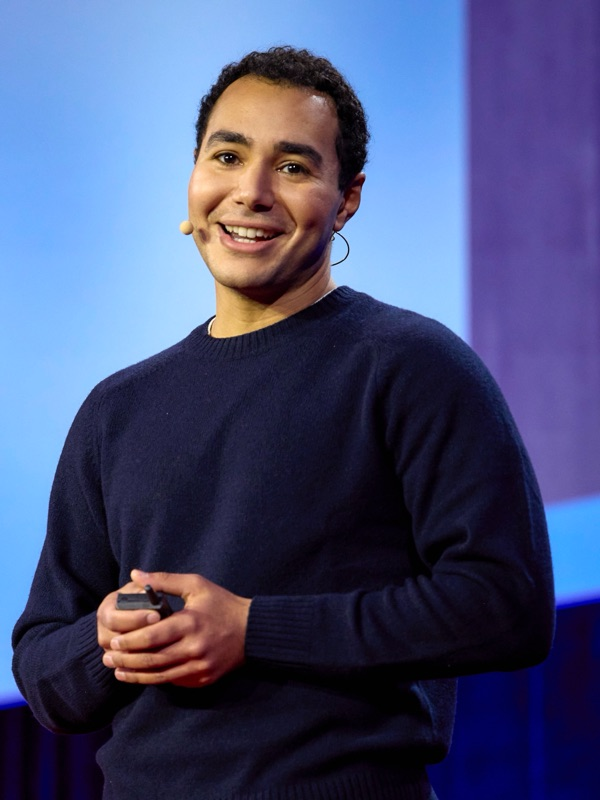

I am a Scientist and Member of Technical Staff on the founding team of AMI Labs. Previously, I was a Research Scientist at Meta in Fundamental AI Research (FAIR). I received my PhD from McGill University, advised by Mike Rabbat and supported by a Vanier Scholarship.
I work on self-supervised learning and world models, with a focus on Joint‑Embedding Predictive Architectures (JEPA), which learn abstract representations of the world by predicting in latent space rather than observation space. My work on JEPA (incl. I-JEPA and V-JEPA) has been featured in Quanta Magazine, CNBC, Reuters, Fortune, La Presse, and others. I’ve also spoken about this work at TED.
“We’re all here on this earth to help others; what on earth the others are here for, I have no idea.” — W. H. Auden
Selected Service
Selected Publications
See Google Scholar for full list of up-to-date publications.
Invited Talks
Upcoming
Selected Previous
Podcasts
Doctoral Students Co-Advised
Co-advised alongside each student's academic advisor.
Open-Source Research Code
Official codebase for V-JEPA 2, a self-supervised video world model for understanding, prediction, and planning.
Official codebase for I-JEPA, a non-generative approach for self-supervised learning from images.
Official codebase for V-JEPA, a method for self-supervised learning of visual representations from video.
Official codebase for Masked Siamese Networks, a self-supervised learning framework for label-efficient image classification.
Official codebase for PAWS and SuNCEt, semi-supervised methods for learning visual features with limited labels.
Official codebase for Stochastic Gradient Push, a method for distributed deep learning over peer-to-peer networks.